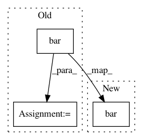

64ac509a6cec89592c6140eebcd9058cb87044f0,examples/pie_and_polar_charts/polar_bar.py,,,#,13
Before Change
width = np.pi / 4 * np.random.rand(N)
ax = plt.subplot(111, projection="polar")
bars = ax.bar(theta, radii, width=width, bottom=0.0)
// Use custom colors and opacity
for r, bar in zip(radii, bars):
bar.set_facecolor(plt.cm.viridis(r / 10.))
bar.set_alpha(0.5)
plt.show()
//////////////////////////////////////////////////////////////////////////////////////////////////////////////////////////////////////////////////////////
//
After Change
colors = plt.cm.viridis(radii / 10.)
ax = plt.subplot(111, projection="polar")
ax.bar(theta, radii, width=width, bottom=0.0, color=colors, alpha=0.5)
plt.show()
//////////////////////////////////////////////////////////////////////////////////////////////////////////////////////////////////////////////////////////
In pattern: SUPERPATTERN
Frequency: 6
Non-data size: 3
Instances
Project Name: matplotlib/matplotlib
Commit Name: 64ac509a6cec89592c6140eebcd9058cb87044f0
Time: 2019-02-13
Author: elch.rz@ruetz-online.de
File Name: examples/pie_and_polar_charts/polar_bar.py
Class Name:
Method Name:
Project Name: matplotlib/matplotlib
Commit Name: 619804a60aa018dea31cf877aeceaad35ba4ec0f
Time: 2019-04-29
Author: anntzer.lee@gmail.com
File Name: examples/units/bar_unit_demo.py
Class Name:
Method Name:
Project Name: automl/ParameterImportance
Commit Name: 1135c103f8abf2b916e35607971181c2b3ec98b2
Time: 2016-12-08
Author: biedenka@informatik.uni-freiburg.de
File Name: importance/evaluator/forward_selection.py
Class Name: ForwardSelector
Method Name: plot_result
Project Name: matplotlib/matplotlib
Commit Name: 619804a60aa018dea31cf877aeceaad35ba4ec0f
Time: 2019-04-29
Author: anntzer.lee@gmail.com
File Name: examples/lines_bars_and_markers/bar_stacked.py
Class Name:
Method Name:
Project Name: matplotlib/matplotlib
Commit Name: c53017ed1f7413121fd9e4f39b7e4beb107d3a04
Time: 2019-04-23
Author: anntzer.lee@gmail.com
File Name: examples/event_handling/pick_event_demo.py
Class Name:
Method Name: pick_simple
Project Name: matplotlib/matplotlib
Commit Name: e5f7982245dadce181e885228e5b68e3e0beefa5
Time: 2017-12-31
Author: tcaswell@gmail.com
File Name: lib/matplotlib/tests/test_axes.py
Class Name:
Method Name: test_pandas_bar_align_center